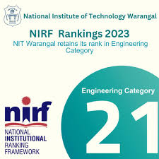

Campus Life

Welcome to the Campus of NITW


I am glad that I have been given an opportunity to serve as the Director of National Institute of Technology (NIT) Warangal. The oldest one in the bracket of first 17 NITs. It is an honour and privilege for me to lead this prestigious institute which has a rich history of its distinction in teaching, research and service to the nation. It is the first regional engineering college whose foundation stone has been laid by the former prime minister, Pandit Jawaharlal Nehru in the year 1959. Over a period of more than six decades, NIT Warangal has emerged as one of the leading institutions in engineering and technology.